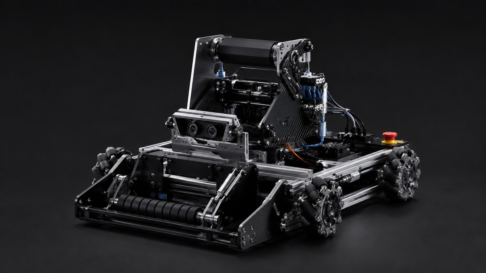

MATSUE KOSEN ROBOT
ROX2026
ROBOT.
Engineering, control and design.
Open for everyone.
ROBOT OVERVIEW
競技のために、
細部まで設計する。
ROX2026のロボットは、移動・把持・射出・認識・制御をひとつのシステムとして設計しています。このアーカイブでは、完成品だけでなく、試作と改善の過程も公開します。
- 7
- 公開中のシステム
- 4WD
- 全方向移動
- OPEN
- 設計・制御を共有
INTERACTIVE ROBOT
機構を、
触って知る。
ポイントを選択すると、設計の意図、使用部品、関連データを確認できます。
Hotspotを選択して詳細を見る
MAIN SYSTEMS
ひとつの勝利を
支える、七つの系統。
SOFTWARE
機械を動かす、
ソフトウェア。
Robot本体のソースコードは別リポジトリで管理しています。ここでは大会時点のタグを基準とした参照先を案内します。
ARCHIVE REFERENCE: ROX2026-final 大会終了後、このタグまたはReleaseを作成してください。
DEVELOPMENT HISTORY
試して、壊して、
より良くする。
大会機に至るまでの判断と更新を、履歴として残します。
DOWNLOADS
設計データを、
次の挑戦へ。
公開可能な設計資料・CAD・関連ドキュメントを一覧で管理します。
ABOUT THIS ARCHIVE
知識を、
次のロボットへ。
ROX2026は、競技ロボットの設計と開発の知見を、チームの内外へ開くための技術アーカイブです。掲載内容は継続して更新します。
Project on GitHub